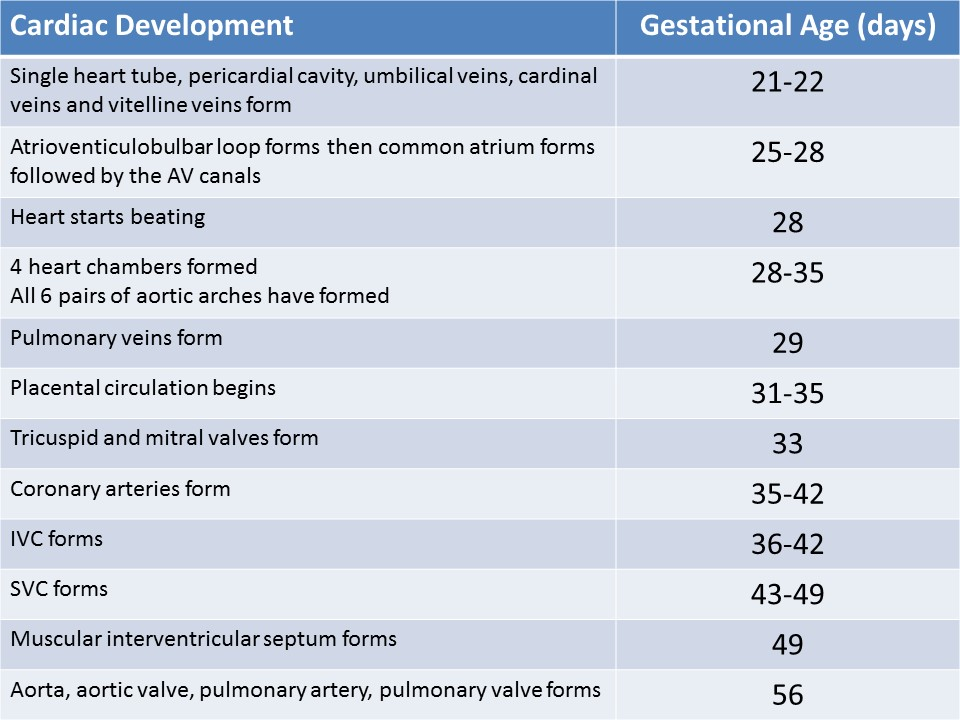
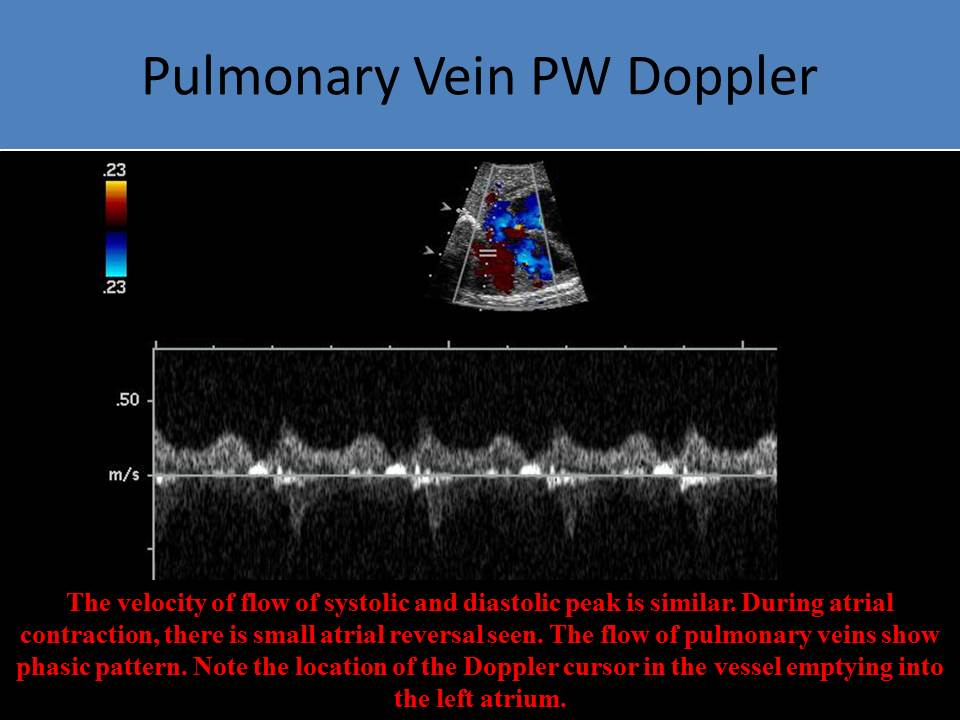
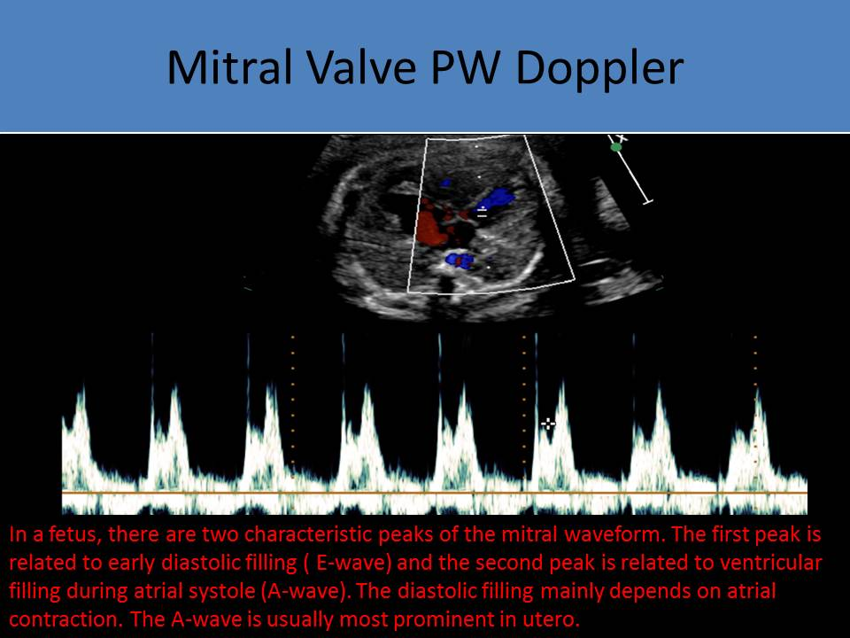

.jpg)
Embryology & Fetal Anatomy
Introduction:
Systemic Veins:
- Organogenesis occurs between 4 and 8 weeks gestation
- A fetus is most susceptible to teratogen exposure during organogenesis
- Heart, blood vessels and blood cells originate from the splanchnic mesodermal germ layer
- Paired tubular structures merge to form a single heart tube at day 22 gestational age
- The tube connects to the developing arch system, vitelline veins and umbilical veins
- Vitelline veins develop into the portal and hepatic veins
- The atrioventriculobulbar loop forms by folding and twisting of the heart tube
- Normal cardiac looping happens to the right and leads to D-looping heart
- Congenitally corrected transposition of the great arteries can result from left or L-looping heart
- Looping occurs around 23rd day of development
- Cephalic end of the heart tube bends ventrally and to the right (dextro-looping)
- Caudal end of the tube bends dorsocranially to form a loop
- Primitive ventricle is caudal to the bulbus cordis
- Primitive atrium is caudal to the tubular heart; the atrium connects to the sinus venosus (receives cardinal and umbilical veins)
- The bulbus cordis forms the right arm of the U-shaped heart and the primitive ventricle forms the left arm
- The primitive ventricle develops into the left ventricle and proximal portion of the bulbus cordis forms the outflow tract and the truncus arteriosus will form both great vessels
- Common atrium forms and enters the pericardial cavity
- The heart starts beating around 28 days gestational age
- The atrioventriculobulbar loop begins to untwist
- Sinus venosus and bulbus cordis are absorbed to start forming the 4 chamber heart
- Atrioventricular canal and conal region begins to develop on day 28 (4 weeks)
- Endocardial cushions form the atrioventricular valves and atrial septum
- The septum primum descends from the roof of the atrium and fuses with the endocardial cushions
- The septum secundum forms with an opening called the foramen ovale that is covered by a flap
- The foraminal flap in the left atrium is formed from the septum primum tissue
- The right and left atrioventricular orifices are now formed
- The pulmonary veins form
- The mitral and tricuspid valves form at day 33 of development
- The inferior vena cava (IVC) forms about a week before the superior vena cava (SVC)
- The ventricular walls thicken and the muscular interventricular septum is completely formed by the end of the 7th week gestation (49 days)
- The endocardial cushions form the membranous portion of the septum a few days later
- Complete septation of the heart is identified by the start of the 8th week of gestation
- The aorta, aortic valve, pulmonary artery and pulmonic valve form last by 56 days gestation
- 6 pairs of aortic arches form from the distal end of the truncus arteriosus by 28 - 35 days gestation
- Some develop into permanent structures and others are resorbed
- 3rd pair of arches = right and left carotid arteries
- Left 4th arch = aorta
- Right 4th arch = innominate and right subclavian artery
- Right 6th arch = right pulmonary artery
- Left 6th arch = left pulmonary artery and ductus arteriosus
- Other remaining arches disappear

Fetal Circulation:- Oxygenation of fetal blood takes place in the placenta
- Three fetal oxygenation sites: ductus venosus, foramen ovale, ductus arteriosus
- Fetal circulation is a parallel circuit, both ventricles pump flow at the same time
- Right ventricle flow volume exceeds the left venticular flow volume by a ratio of 1.3:1
- Cardiac output, ventricular compliance and preload increase with fetal age
- Total peripheral resistance will be reduced as the fetus advances in age
- The heart rate has the greatest effect on cardiac output in a fetus
- The formula to calculate cardiac output is heart rate X stroke volume
- The myocardium in a
fetus is not developed like an adult, so the heart rate is most important when trying to
increase cardiac output - Oxygenated blood flows from the placenta to the fetus via the umbilical vein ( oxygen saturation: 85%); most of this blood flows into the ductus venosus (bypassing the liver) and goes to the inferior vena cava (the remaining oxygenated blood enters the liver and portal circulation)
- The umbilical vein splits into the left portal vein and the ductus venosus
- Ductus Venosus:
- Hourglass like structure
- Regulates the flow of umbilical blood through the liver sinusoids
- Carries oxygen rich blood
- 30% of the oxygenated blood from the umbilical vein enters the liver and exits through the hepatic veins to enter the IVC
- The majority of the blood in the ductus venosus enters the IVC and right atrium to be shunted directly through the foramen ovale to the left heart
- About 70% of the OXYGENATED blood (from the placenta) flows through the umbilical vein >>> ductus venosus >>> inferior vena cava >>> right atrium >>> through the foramen ovale to the left atrium >>> through the mitral valve to the left ventricle >>> through the aortic valve to the ascending aorta/aortic arch and to the fetal head and upper extremities
- The crista dividens blocks a portion of the oxygenated blood from going through the foramen ovale
- The remaining 30% of the OXYGENATED blood in the IVC mixes with the deoxygenated venous return from the fetal vena cava in the right atrium
- Deoxygenated blood (from the vena cava) enters the right atrium, mixes with the oxygenated ductus venosus blood that is not shunted through the foramen ovale and passes through the tricuspid valve to enter the right ventricle, then exits the right ventricle through the pulmonic valve to the pulmonary artery
- About 20% of the blood in the pulmonary artery goes to the lungs for lung tissue development
- About 80% of the blood in the pulmonary artery goes to the ductus arteriosus to reach the descending aorta and lower body
- Oxygenated blood passes through the ductus arteriosus to reach the descending aorta to supply the lower extremities and oxygenated blood passes through the foramen ovale to reach the ascending aorta/arch to supply the head/upper extremities
- Closes first after birth, once the umbilical blood supply is cut off, and is called the ligamentum venosum
- Foramen Ovale:
- A guarded flap valve that allows oxygenated blood to pass from the right to the left atrium in a fetus
- Regulates the proportion of oxygenated flow entering the left heart in a fetus
- Allows for equalization of the atrial pressures
- After a fetus is born, the pressure of the left side will be increased secondary to activation of the lungs and the foramen ovale should close due to the difference of the pressure between the right and left side
- Closes within 1 year of age
- 25% of adult patients have a patent foramen ovale
- Ductus Arteriosus:
- Connects the pulmonary artery with the descending aorta (right to left shunt)
- Equalizes the pulmonary artery pressure and the aorta pressure in the fetus by allowing the majority of pulmonary artery flow to bypass the high resistance pulmonary vascular beds
- Aortic isthmus: defined as the region between the origin of the left subclavian artery and the ductus arteriosus
- Ductus arteriosus closes soon after birth due to the release of bradykinin from the lungs upon their first inflation
- Closure causes increased left atrial pressure that will close the foramen ovale (within 1 year of age)
- Once closed, the ductus arteriosus is called the ligamentum arteriosum
- Blood exits the fetus through the umbilical arteries that originate from the fetal internal iliac arteries
- The deoxygenated blood returns to the placenta to pick up more oxygen and return to the fetus
- After birth, the distal umbilical arteries become the umbilical ligaments and the proximal segments become the superior vesicle arteries
- After birth, the umbilical vein collapses and becomes the ligamentum teres

Normal Chest and Cardiac Anatomy:
- Fetal lung tissue should be homogeneous and will increase in echogenicity as the fetus grows
- 2nd trimester - fetal lungs less echogenic than the liver
- 3rd trimester - fetal lungs more echogenic than the liver
- Fetal diaphragm is hypoechoic dome shaped structure with the top of the dome facing cephalad
- The fetal lungs border the heart laterally
- The fetal diaphragm borders the heart inferiorly
- The thymus is superior to the heart in the anterior upper mediastinum and the great vessels course posterior to it
- Posterior mediastinum
- Area located central and posterior to the heart
- Strurctures found in the posterior mediastinum
- Descending aorta
- Trachea - bifurcates at the level of the pulmonary artery bifurcation
- Esophagus - anterior to the spine, posterior to the trachea
- Main bronchi
- Pulmonary veins - anchor the heart to the chest structures
- Azygos vein - to the right of the spine, joins the SVC at the level of the tracheal bifurcation
- Fetal heart normally occupies 1/3 of the fetal chest (30%)
- The heart is bordered anteriorly by the lower 2/3 of the sternum and the costal cartilage of the 2nd - 6th ribs
- Fetal heart normally sits with the apex pointed toward the left side
- The normal angle between the interventricular septum and the midline of the thorax is about 45 degrees
- Normally, half of the right ventricle, the entire left ventricle, and more than half of the left atrium lie in the left chest
- Thoracic circumference (TC)
- Measured in a transverse view of the thorax at the level of the four chamber heart
- Trace around the chest, along the ribs not the outer skin line
- TC helps to assess suspected cardiomegaly and pulmonary hypoplasia
- Fetal thoracic circumference/abdominal circumference ratio <0.77 indicates significant thoracic hypoplasia
- Cardio-Thoracic Ratio (C/T Ratio)
- Divide the circumference of the heart by the circumference of the chest
- Or divide the area of the heart by the area of the chest
- Used to evaluate cardiomegaly
- Normal C/T circumference ratio: less than 0.5
- Normal C/T area ratio: less than 0.3
- Heart rate before 6 weeks is usually 100-115bpm
- Normal heart rate after 6 weeks is 100-180bpm; Average 120-160bpm
- Bradycardia <100bpm, Tachycardia >180 bpm
Systemic Veins:
- Superior vena cava and inferior vena cava drain into the right atrium
- Usually imaged together in a sagittal plane attaching to the posterior right atrium
- Superior vena cava:
- Delivers deoxygenated blood to the right atrium of the heart
- The junction of the right and left brachiocephalic veins form this vein
- All of these veins receive blood from the upper body, such as the arms, neck, and the head
- Smaller diameter than the IVC
- The azygous vein empties into the superior vena cava
- Superior vena cava is located posterior and left to the ascending aorta
- Azygous vein
- Delivers deoxygenated blood from the posterior wall of the thorax and abdomen into the superior vena cava
- Only vein that travels from the mid abdomen to the upper mediastinum
- Vessel that can be important for collateral flow pathway with interrupted IVC
- Inferior vena cava:
- Anterior and rightward of the spine and the descending aorta-below the level of the liver
- Carries deoxygenated blood from the lower body to the heart and empties into the right atrium
- The inferior vena cava is the result of the confluence of the iliac veins
- Side-by-side with the aorta in the pelvis
- Anterior to the aorta in the upper abdomen
- Converges with the ductus venosus and three hepatic veins into the subdiaphragmatic vestibulum
- Larger diameter than the SVC
- Coronary sinus:
- A tubular structure that collects blood from the heart muscle and delivers deoxygenated blood to the right atrium
- It is located along the heart's posterior surface, between the left ventricle and left atrium
- Brachiocephalic Veins:
- The right brachiocephalic vein courses vertically, anterior to the brachiocephalic artery
- The left brachiocephalic vein courses horizontally, anterior to the three branches of the aortic arch and posterior to the thymus
- The left brachiocephalic vein can be visualized by sweeping cephalad from the three vessel trachea view
- Located anterior and to the right of the left atrium
- Identified by right atrial appendage (auricle)—broad junction and lots of pectinate muscle; small, triangular shaped pouch attached to the right atrium and overlaps the root of the aorta
- Receives the blood from the superior vena cava, inferior vena cava, and coronary sinus
- A delicate net-like membrane within the right atrium is an anatomic variant called a Chiari network
- Eustachian valve
- Junctional fold located at junction of the right atrium and the inferior vena cava
- Guards the entrance of the inferior vena cava
- Guides inflow through the foramen ovale
- Mimics the interatrial septum
- Normal ratio of the atrium and ventricle in a fetus is 1:2
- Forms patent connection between the right atrium and ventricle
- Has three leaflets—septal, anterior, posterior
- Septophilic because tricuspid valve has septal leaflet and it is close to the apex
- Septal and anterior leaflets are visualized with the apical four chamber view
- Usually identified with four chamber view and sagittal views
- Septal leaflet is positioned slightly toward the apex
- Supported by chordal tissue attached to papillary muscles that insert on the septum and free wall of the right ventricle
- Has three portions—inlet, trabecular, outlet (infundibulum)
- Has three papillary muscles, one attached to the ventricular septum
- May see some chordae connect directly to the ventricular wall
- Coarsely trabeculated, more than the left ventricle
- Tricuspid valve always goes with the right ventricle
- Most anterior chamber of the heart
- Receives blood from the right atrium that comes from the IVC/SVC
- Moderator band ( septomarginal trabecula)
- Prominent trabeculation and echogenic structure
- Located near the apex
- Marker of the right ventricle moderator band ( septomarginal trabecula)
- The moderator band is an easy way to identify the right ventricle and differentiate it from the left ventricle
- Connects the interventricular septum to the anterior papillary muscle
- Acts as a primary conduction path into the free wall originating from the right bundle branch
- Located between the right outflow tract and pulmonary trunk
- Has three cusps: right, left, anterior
- Lies anterior and to the left of the aortic valve
- RVOT refers to the main pulmonary artery in fetal ultrasound
- Pulmonary trunk divides into right pulmonary artery, left pulmonary artery, ductus arteriosus
- The main pulmonary artery arises from the right ventricle, crossing over the aorta arising from the left ventricle; This indicates that the great arteries are normally related
- The pulmonary artery is normally slightly larger than the aorta in a normal fetus
- The normal monophasic waveform of the pulmonary valve indicates the vascular resistance of the lower body and placenta
- Defined as the zone of the junction of the interatrial and interventricular septa, the atrioventricular valves, and the four chambers of the heart
- Usually four pulmonary veins
- Can be hard to differentiate all four veins in the fetus
- Can be identified with four chamber view and long axis of the aortic arch
- 4 chamber view demonstrate the right and left inferior pulmonary veins as small slits in the posterior left atrium
- 5 chamber view demonstrates the right and left superior pulmonary veins
- Doppler evaluation demonstrates the pressure changes in the left atrium during the cardiac cycle
- The Doppler tracings of a normal ductus venosus and pulmonary veins will have a very similar appearance with a triphasic pattern

Left Atrium:- Most posterior chamber of the heart (closest to descending aorta and spine)
- Located posterior and to the left of the right atrium
- Identified by left atrial appendage—narrow junction of the appendage to the left atrial body, less pectinate muscle
- Pulmonary veins drain into the left atrium
- The position of the foramen ovale flap valve is a marker of the left atrium in the fetus
- Connection between the left atrium and ventricle
- Lies posterior to the tricuspid valve
- Has two leaflets-anterior, posterior
- Supported by chordal tissue attached to the papillary muscles and insert only on the free wall of the left ventricle
- Fibrous continuity with aortic valve (tricuspid and pulmonic valve has no fibrous continuity in normal heart)
- Septophobic - no leaflet attached to interventricular septum
- The first wave represents the E wave of the atrioventricular valve = diastolic filling
- The second wave represents the A wave of the atrioventricular valve = atrial contraction
- The A wave should be bigger than E wave in a normal fetus (E/A ratio <1.0)
- Most ventricular filling occurs in the second part of the diastole
- In a normal atrioventricular valve, there is no backflow in the atria during systole
- Peak velocities for E and A wave increase with progression of gestational age
- Fusion of E and A wave occur with ventricular dysfunction

Left Ventricle:- Has inlet, trabecular, LVOT portion
- Has two papillary muscles, neither with ventricular septal attachment
- NO chordae insert directly into the ventricular wall
- Finely trabeculated, smooth wall, ellipsoid shape
- Left ventricle has smooth walls that are thicker than the right ventricle
- Giving apex
- Higher septal insertion of the mitral valve
- Mitral valve always goes with the left ventricle
- Has a false tendon (causes Still’s murmur)
- Has three cusps-right, left, non-coronary cusp
- Each cusp originates at the sinus of valsalva
- The right coronary artery originates from the right sinus of valsalva
- The left coronary artery originates from the left sinus of valsalva
- Has fibrous continuity with mitral valve
- Normal aortic valve is to the right and posterior to the pulmonary artery
- The normal monophasic waveform of the aortic valve indicates the vascular resistance of the upper body of the fetus
- Designated by origin of the coronary arteries from the aortic sinus
- LVOT refers to the ascending aorta in fetal ultrasound
- Curved structure with head/neck vessels (this characteristic can help to differentiate from the ductal arch)
- Innominate-divides into right carotid and right subclavian artery
- Left carotid artery
- Left subclavian artery
- More superior than the ductal arch
- Appears to be like a candy cane
- The descending thoracic aorta is located anterior and to the left of the spine; courses posterior to the left atrium
- Composed of two layers: visceral and parietal
- Surrounds the heart in the thorax
- Limits heart motion in the chest and overexpansion
- Effusion forms between the visceral and parietal layers
- Located on the right side of the abdomen
- Hepatic veins are blood vessels which transport the liver's deoxygenated blood filtered by the liver to the inferior vena cava
- Portal sinus located just outside the liver
- Confluence of the umbilical vein, ductus venosus, extrahepatic portal vein and the left and right portal branches